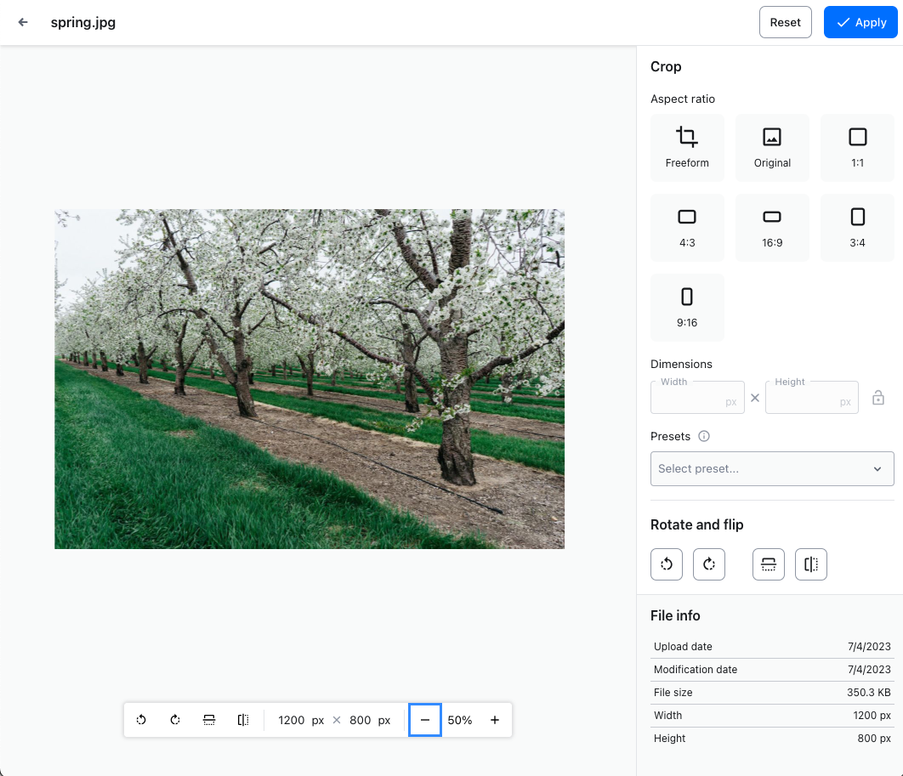
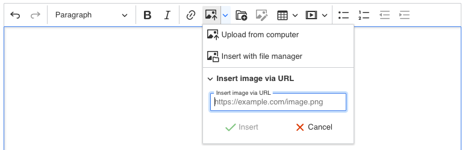

Update to CKEditor 5 v40.x
When updating your CKEditor 5 installation, ensure all the packages are the same version to avoid errors.
For custom builds, you may try removing the package-lock.json or yarn.lock files (if applicable) and reinstalling all packages before rebuilding the editor. For best results, make sure you use the most recent package versions.
# Update to CKEditor 5 v40.2.0
Released on December 12, 2023.
For the entire list of changes introduced in version 40.2.0, see the release notes for CKEditor 5 v40.2.0.
Below are the most important changes that require your attention when upgrading to CKEditor 5 v40.2.0.
# AI Assistant integration
The below information affects all editor integrations that use the AI Assistant feature.
We added support for the Amazon Bedrock service and for providing custom adapters that may extend our solutions or connect to a custom model. To enable this, we needed to refactor the feature’s plugin architecture and configuration structure. However, we hope it makes CKEditor ready to provide new AI-related features in the future without introducing more breaking changes.
Before, the OpenAI adapter was automatically required by the AIAssistant plugin. Now, the integrator must explicitly add the chosen adapter to the list of plugins:
// Before:
import { AIAssistant } from '@ckeditor/ckeditor5-ai';
ClassicEditor
.create( element, {
plugins: [ AIAssistant, /* ... */ ]
} );
// After:
import { AIAssistant, OpenAITextAdapter } from '@ckeditor/ckeditor5-ai';
ClassicEditor
.create( element, {
plugins: [ AIAssistant, OpenAITextAdapter, /* ... */ ]
} );
Another change is related to the configuration structure:
- We introduced a new
config.ainamespace. - We moved the
config.aiAssistantoption intoconfig.ai.aiAssistant. - We extracted adapter-related properties to
config.ai.openAI. - Also, we renamed some properties.
// Before:
ClassicEditor
.create( element, {
aiAssitant: {
authKey: 'OPENAI_API_KEY',
removeCommands: [ 'improveWriting', 'casual' ],
useTheme: false
}
} );
// After:
ClassicEditor
.create( element, {
ai: {
openAI: {
requestHeaders: {
Authorization: 'Bearer OPENAI_API_KEY'
}
},
aiAssistant: {
removeCommands: [ 'improveWriting', 'casual' ]
},
useTheme: false
}
} );
# CKBox image editing
The new release includes the CKBox image editing feature. You can access this feature either through a main toolbar button or the image contextual toolbar button . It lets users perform quick image edits such as cropping, resizing, flipping, and rotating the image. Image editing is called from within the editor and the process takes place right in the asset manager. This speeds up and simplifies the content editing process.

# Adding CKBox image editing to CKEditor 5
To use the CKBox image editing feature, you need to import it into your editor. It requires the PictureEditing plugin to work.
Then, add it to the plugin list and the toolbar as shown below.
import { ImageUpload, PictureEditing } from '@ckeditor/ckeditor5-image';
import { CloudServices } from '@ckeditor/ckeditor5-cloud-services';
import { CKBox, CKBoxImageEdit } from "@ckeditor/ckeditor5-ckbox";
ClassicEditor
.create( document.querySelector( '#editor' ), {
plugins: [ PictureEditing, ImageUpload, CloudServices, CKBox, CKBoxImageEdit, /* ... */ ],
toolbar: [ 'ckbox', 'ckboxImageEdit', /* ... */ ], // Depending on your preference.
ckbox: {
// Feature configuration.
// ...
}
} )
.then( /* ... */ )
.catch( /* ... */ );
You can add the image editing button both to the main editor toolbar (as shown in the snippet above) and the image contextual toolbar.
image: {
toolbar: [
'imageStyle:inline', 'imageStyle:block', 'imageStyle:side', '|',
'toggleImageCaption', 'imageTextAlternative', '|', 'ckboxImageEdit'
]
},
You can read more about image editing in the {@link @ckbox features/images/editing CKBox documentation}.
# Expanded image insert dropdown
We have updated the toolbar insertImage component. By default, the image toolbar dropdown provides access to all installed methods of inserting images into content:
- Uploading images from your computer.
- Adding images from file managers.
- Inserting images via URL.

You may want to update your toolbar configuration to make use of the updated feature if you have not used it before.
import { Image, ImageCaption, ImageResize, ImageStyle, ImageToolbar } from '@ckeditor/ckeditor5-image';
import { LinkImage } from '@ckeditor/ckeditor5-link';
ClassicEditor
.create( document.querySelector( '#editor' ), {
plugins: [ Image, ImageToolbar, ImageCaption, ImageStyle, ImageResize, LinkImage ],
// The insert image dropdown toolbar item.
toolbar: [ 'insertImage', /* ... */ ],
} )
.then( /* ... */ )
.catch( /* ... */ );
By default, the function automatically detects all available upload methods. For example, it will detect and add the ImageInsertViaUrl if enabled. While this feature requires no configuration, you may limit the methods included in the dropdown (apart from not installing a specific feature) or change their order. For this, you can use the image.insert.integration configuration option:
import { Image } from '@ckeditor/ckeditor5-image';
ClassicEditor
.create( document.querySelector( '#editor' ), {
plugins: [ Image, /* ... */ ],
toolbar: [ 'insertImage', /* ... */ ],
image: {
insert: {
// You do not need to provide this configuration option
// if the default list content and order reflects your needs.
integrations: [ 'assetManager', 'upload', 'url' ]
}
}
} )
.then( /* ... */ )
.catch( /* ... */ );
Learn more about the toolbar dropdown configuration in the image installation guide.
# Image upload plugins
These are all available plugins that provide integrations with the insert image dropdown:
ImageUpload– Provides the default upload from computer toolbar button.ImageInsertViaUrl– Provides the insert image via URL integration and toolbar item.ImageInsert– Delivers both of the integrations mentioned above:ImageUploadImageInsertViaUrl
Additional image inserting plugins:
CKBox– Asset manager that provides image upload and editing capabilities.CKFinder– Image manager.
# New image upload icons
Due to the changes to the image insert mechanisms, we introduced new toolbar icons and replaced the old image icon.
Now there are:
- image upload icon that is the default for the dropdown or the upload from computer command.
- image manager icon.
- insert via URL icon.
The toolbar dropdown will use the image upload icon by default. If no upload adapter is present, the toolbar will use the next available icon instead.
# Removal of the insertImageViaUrl option
The insertImageViaUrl configuration option was unused and was removed. If you have it somewhere in your editor configuration, remove it to avoid getting an error.
# Update to CKEditor 5 v40.1.0
Released on November 15, 2023.
For the entire list of changes introduced in version 40.1.0, see the release notes for CKEditor 5 v40.1.0.
Below are the most important changes that require your attention when upgrading to CKEditor 5 v40.1.0.
# Changes to the default insert image action
We changed how the images are inserted by default. For a long time, the image insert action detected where the user placed the selection. Depending on that, the editor inserted an inline image or a block one. This sometimes caused confusion and led to suboptimal experiences. From now on, the images will be inserted as block ones by default.
Changes introduced in the latest version affect the image.insert.type configuration setting. It lets the integrators set up how to handle newly uploaded or pasted images in the editor content.
We renamed the undefined option to auto (see further details below). Now, if the image.insert.type configuration is not specified, all images inserted into the content will be block images. This means that inserting an image inside a paragraph (or other content blocks) will create a new block for the image immediately below or above the current paragraph or block. After insertion, you can transform the block image into an inline image using the contextual toolbar.
If you wish to change this behavior, you can adjust the type setting in the editor configuration to meet your needs:
ClassicEditor
.create( element, {
image: {
insert: {
type: 'auto'
}
}
} );
The type setting accepts the following values:
'auto'– The editor determines the image type based on the cursor’s position, just as before. For example, if you insert an image in the middle of a paragraph, it will be inserted as inline. If you insert it at the end or beginning of a paragraph, it will become a block image.'block'– Always inserts images as block elements, placing them below or above the current paragraph or block.'inline'– Always inserts images as inline elements within the current paragraph or block.
If you omit the type setting in the configuration, the behavior defaults to inserting images as a block.
Important: If you enable just one type of image plugin (for example, ImageInline is enabled but ImageBlock is not), the image.insert.type configuration will be effectively ignored and the only supported image type will be used.
# Updated image text alternative icon
The image text alternative (the alt attribute) helps screen reader users navigate and understand the document. We have updated the toolbar icon to be more intuitive and easier to recognize, following global standards.
# Update to CKEditor 5 v40.0.0
Released on October 4, 2023.
For the entire list of changes introduced in version 40.0.0, see the release notes for CKEditor 5 v40.0.0.
Below are the most important changes that require your attention when upgrading to CKEditor 5 v40.0.0.
# Changes to the image feature
# Width and height attributes
This release introduces changes to the image feature connected with the image width and height attributes. The changes include:
- Upon uploading an image file or inserting it into the editor content, the CKEditor 5 image feature fetches these dimensions from the file. The editor then adds these properties to the markup, just like the text alternative property.
- The editor will not change existing content. This means that loading HTML (that is,
setData()) with images does not set up these attributes. - If the user uses an upload adapter and the server sends back the uploaded image with the
widthorheightparameters already set, the existing values are not overwritten.
- The editor will not change existing content. This means that loading HTML (that is,
- Changes to an image (such as resize, etc.) will trigger the creation of these attributes. These attributes are crucial to proper content handling. Actions on a current image that does not have these improve the image’s markup.
- The
aspect-ratioattribute was added to the image’s properties to handle situations when the file is resized or scaled with a tweaked aspect ratio.
Image output HTML before:
<p>
<img src="image.jpg" alt="">
</p>
Image output HTML after (added the width and height attributes):
<p>
<img src="image.jpg" alt="" width="400" height="300">
</p>
Resized image output HTML before:
<p>
<img class="image_resized" style="width:50%;" src="image.jpg" alt="">
</p>
Resized image output HTML after (added the aspect-ratio style and the width and height attributes):
<p>
<img class="image_resized" style="aspect-ratio:400/300;width:50%;" src="image.jpg" alt="" width="400" height="300">
</p>
# Changes to the model
Due to the introduction of this new behavior, we introduced the following changes to model attributes:
- The
widthandheightattributes are now used to preserve the image’s natural width and height. - The information about a resized image is stored in the
resizedWidthattribute (renamed fromwidth) and a newly addedresizeHeightattribute.
Therefore, the relation between styles and attributes toward model attributes looks as follows:
- Style
width→ modelresizedWidth(changed fromwidth). - Style
height→ modelresizedHeight(new). - Attribute
width→ modelwidth(new). - Attribute
height→ modelheight(new).
Given the following input HTML:
<p>
<img src="image.jpg" style="width:50%;" width="400" height="300" alt="">
</p>
Before, the model would set the resized value in the width model attribute and ignore the input width and height attributes:
<paragraph>
<imageInline src="image.jpg" width="50%"></imageInline>
</paragraph>
Now the resized value is stored in the resizedWidth attribute (the width attribute is now reserved for the natural width value):
<paragraph>
<imageInline src="image.jpg" resizedWidth="50%" width="400" height="300"></imageInline>
</paragraph>
# Changes to the srcset attribute
We simplified the srcset model attribute that provides parameters for responsive images. It is no longer an object { data: "...", width: "..." }, but the value stored in the data part before.
# Changes to content styles
This release updated editor content styles. This means you need to update them in your editor implementation to avoid any discrepancies. Refer to the Content styles guide to learn how to generate the style sheet.
# Changes to the comments feature
# Unlinked comment threads and UX/UI changes
The comment thread’s resolved state was separated from the unlinked state:
- A thread is resolved when manually resolved by the user.
- A thread is unlinked when the related content in the editor was removed.
Earlier, these actions were treated as the same.
Both actions still put a comment thread inside the comments archive. This new approach is reflected in the comments archive UI and UX. Notably, an unlinked comment thread can be further resolved and reopened while inside the comments archive. Additionally, an unlinked comment thread has a gray header color to differentiate it from a resolved comment thread.
The new approach has an impact on how revision history (or loading legacy document data) works. Now, resolved comment threads will stay in the comments archive after restoring a revision. However, unlinked comment threads will be restored together with the document data.
You can read more about comment thread states in the Comments walkthrough guide.
# New CommentThread#unlinkedAt property
We have introduced a new property, CommentThread#unlinkedAt. If your integration saves comment thread data in your system, update your code, so it saves the new property and returns it together with other CommentThread data.
# Changes impacting custom features
The CommentThread#archivedAt property is now the property to check when deciding whether the comment thread is inside the comments archive or not. Earlier, it was based on #resolvedAt. If you have custom code that uses the #resolvedAt property to filter threads in the comments archive, change it to use #archivedAt instead.
We renamed the CommentsArchive#resolvedThreads property to #archivedThreads. If your custom code uses that property, make sure to apply this change.
The deletedAt property is no longer passed in AddCommentThreadEvent as it is not needed anymore. Additionally, now, CommentsRepository should never store deleted comment threads.
You may need to update your custom code accordingly (for example, if your application uses the comments outside the editor feature). Examples:
// Before:
for ( const thread of commentsRepository.getCommentThreads( { channelId } ) ) {
// Ignore threads that have already been resolved or removed.
if ( !thread.isResolved && !thread.deletedAt ) {
handleNewCommentThread( thread.id );
}
}
// After:
for ( const thread of commentsRepository.getCommentThreads( { channelId } ) ) {
// Ignore threads that have already been resolved.
if ( !thread.isResolved ) {
handleNewCommentThread( thread.id );
}
}
// Before:
commentsRepository.on( 'addCommentThread', ( evt, data ) => {
if ( data.deletedAt ) {
// Return to avoid processing deleted comment threads.
return;
}
// ... Custom code processing the comment thread.
} );
// After:
commentsRepository.on( 'addCommentThread', ( evt, data ) => {
// ... Custom code processing the comment thread.
} );
This change was reflected in the comments outside the editor guide. You might want to review the new version of the guide.
Previously, in a real-time collaboration environment, deleted comment threads were fetched and added to CommentsRepository when the editor re-connected to Cloud Services. This was an incorrect behavior that was fixed.
If your custom integration manually adds deleted comment threads to CommentsRepository, this is wrong and should be fixed. If your custom integration somehow depends on this incorrect behavior, you may need to change it.
# New balloon block editor icon
We have changed the default balloon block editor toolbar indicator icon from the pilcrow icon (¶) to the braille pattern dots icon (⠿). The new icon better corresponds to the dual function of the indicator, which you may use to both invoke the balloon toolbar and to drag to content block around.
While ⠿ is now a default, you can still configure it, for example:
blockToolbar: {
items: [
'bold',
'italic',
'link'
],
icon: 'pilcrow' // or SVG.
},
# A new default lists plugin coming
We currently maintain two list features: List and DocumentList. The list v1 feature was implemented in the early days of CKEditor 5. It supports “plain lists” – lists where <li> cannot contain block content (paragraphs, headings, tables, block images). It supports to-do lists, but it does not support extending list markup via the General HTML Support (GHS) feature.
We implemented the list v2 (document list) feature in 2022 to add support for block content in list items. It supported extending list markup via GHS. It did not, however, support to-do lists. Since then we concentrated on bringing full list v1 functionality to this plugin. We are nearing the end of a long job of pairing these two plugins in their functions. The newest release brings in the to-do list functionality and the simple list configuration setting.
You can follow the current state of works in the Document list feature parity issue. Considering this progress, we will replace the old lists feature with the new document lists in one of the upcoming releases. We will also sunset the old lists at the beginning of 2024. The change will be seamless for the users, but there are significant changes between these plugins. We will update the information about this process as it unfolds.
See the #14767 issue for more details.
Every day, we work hard to keep our documentation complete. Have you spotted outdated information? Is something missing? Please report it via our issue tracker.
With the release of version 42.0.0, we have rewritten much of our documentation to reflect the new import paths and features. We appreciate your feedback to help us ensure its accuracy and completeness.